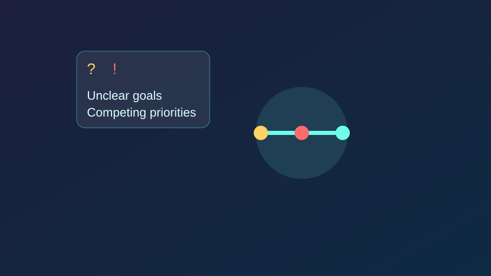
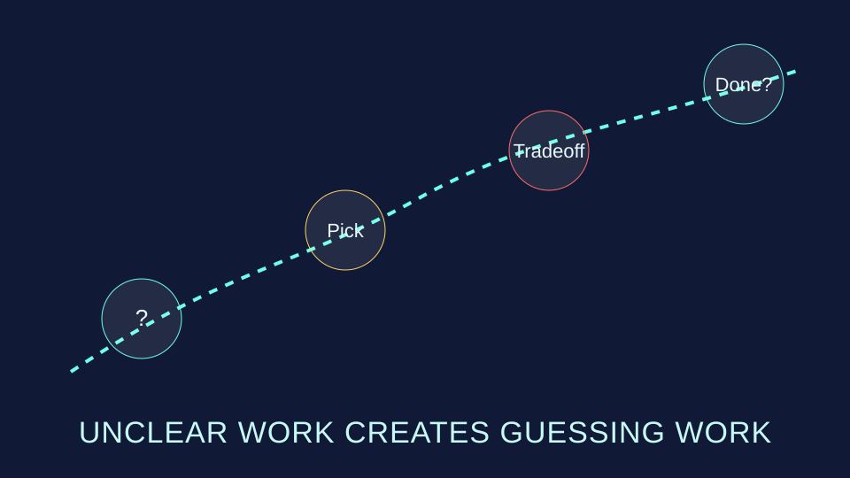
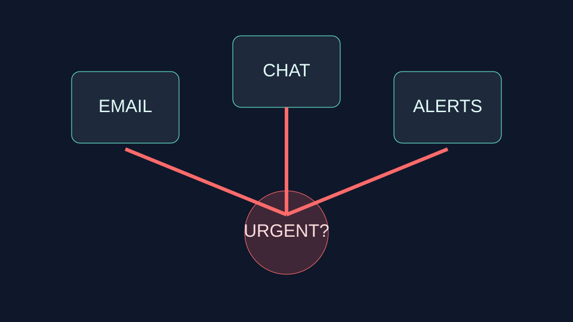
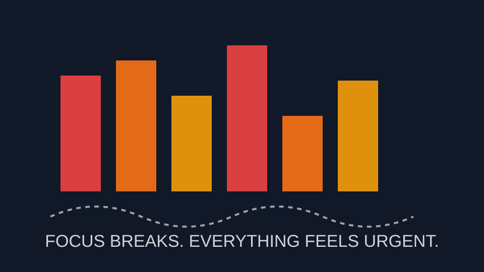
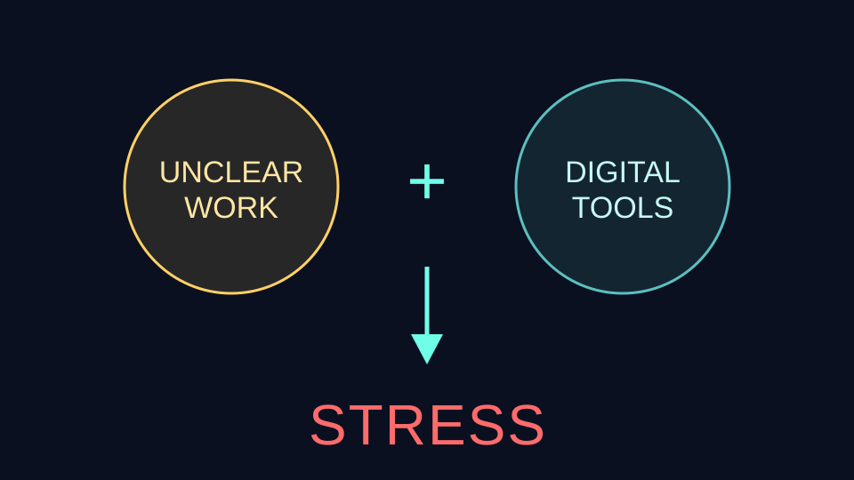
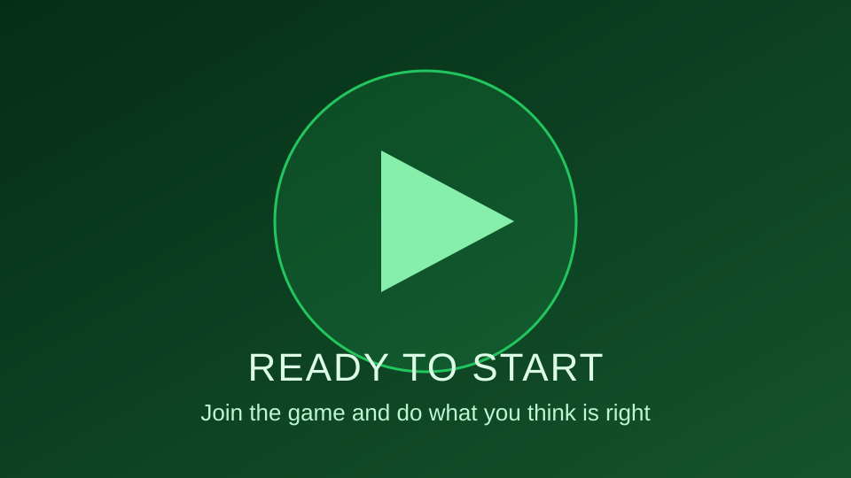

"When we talk about stress, focus usually lands on the individual – how they prioritize, plan, and handle pressure. But today we're looking at something else: how work is organized and how technology amplifies its effects."

Workload ≠ "Busy"
Unclear tasks and goals
Competing priorities
Time dependencies and interruptions
"Workload isn't just about the amount of work. It's equally about how clearly work is defined,how many things compete simultaneously, and how often we get interrupted or dependent on others. When these fail, responsibility shifts from organization to individual."

Unclear work creates guessing work
What's most important?
What counts as "done"?
What if nothing gets cut?
"When tasks lack clarity, a predictable pattern emerges: people start guessing. They guess what matters most, how good something needs to be, and what's actually expected. That's where burden begins – even before stress appears."

Digital stress rarely creates new problems
Multiple channels simultaneously
Constant availability
Notifications and interruptions
"Digital stress isn't usually a new problem. Technology rarely creates the confusion – it amplifies it. When the same unclear task shows up in email, Teams, chat, and as a notification, everything feels equally urgent – regardless of actual importance."

What actually happens
Everything feels urgent
Focus breaks constantly
Over- or underdelivery
"The result isn't higher speed – it's more interruptions. Focus shatters, quality spreads thin, and energy goes to reacting instead of producing value."

STRESS
"This is where both areas meet. When work is unclear and technology sits on top, pressure transforms into stress – very quickly."

Now it gets interesting
You're about to experience how this works in practice.